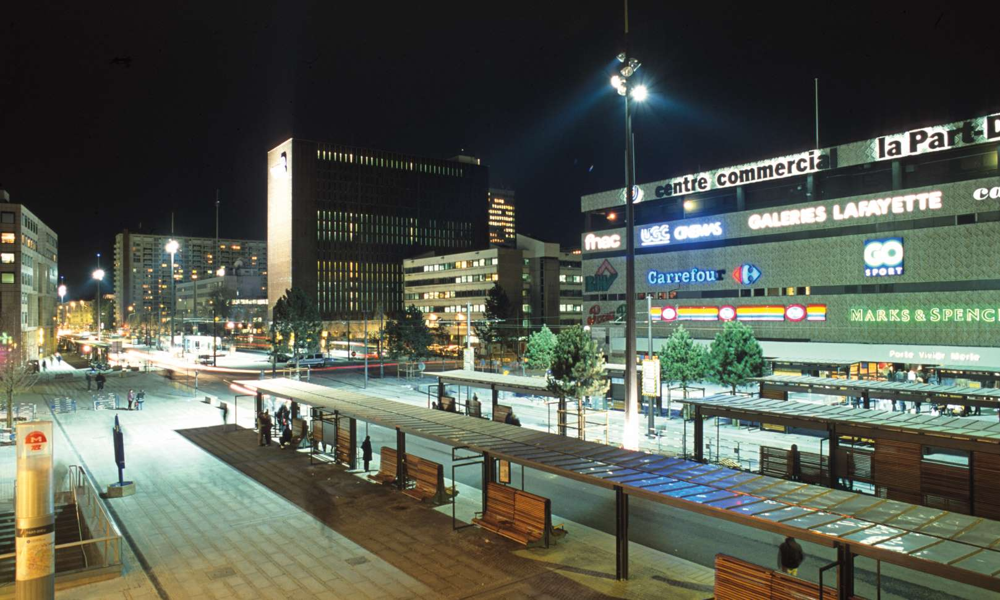

Survolez l'image et agrandissez/réduisez la vue à l'aide de la molette.
Budget: 13 015 000 € HT (bd Vivier Merle), 1 405 000 € HT (bd Deruelle)
Surface amménagée: 36 000 m2 (bd Vivier Merle), 12 600 m2 (bd Deruelle)
Date début: 1998
Date fin: 2001
Maîtrise d'ouvrage: Le Grand Lyon Mission Tramway, SERL
Co-traitant(s): bureau des paysages
Description:
Situé à la frange Est du Lyon ancien, le quartier d’affaires de la Part-Dieu a été construit autour de la gare
du même nom sur le principe des dalles et de la séparation des flux (automobile, ferroviaire, piéton) cher à
l’urbanisme des années 1960. L’intention du projet, débuté par l’aménagement du boulevard Marius Vivier
Merle, est de créer une continuité entre les espaces publics de la ville et le quartier de la Part-Dieu. Ainsi,
une passerelle piétonne est démolie, le tracé des deux trémies du tunnel de la Part-Dieu est modifié pour
créer un espace de plain-pied.
Un pavement de granit décliné en grandes dalles ou petits pavés recouvre
la quasi totalité des surfaces, à l’exception des voies de circulation automobile, et confère un aspect unitaire
au boulevard encombré de réseaux et d’ouvrages. Outre la mise en valeur des platanes existants, des pins
en bosquet et des métaséquoias à grand développement sont plantés de manière aléatoire, en fonction des
disponibilités des sous-sols. Ces plantations contrastent avec le sol minéral et s’alternent avec les cinquantes
huit abris de bus spécifiquement dessinés pour le site.
Six grands mâts d’éclairage ou aiguilles lumineuses
en fonte d’acier ponctuent le boulevard transformé en esplanade. La même grammaire de signes et de repères
est utilisée et déclinée pour l’aménagement du boulevard Eugène Deruelle, perpendiculaire à la grande
esplanade, en recomposant avec de nouvelles plantations la façade technique du centre commercial et
les accès aux bureaux.
{kind=link}
{kind=link}
{kind=link}
{kind=link}